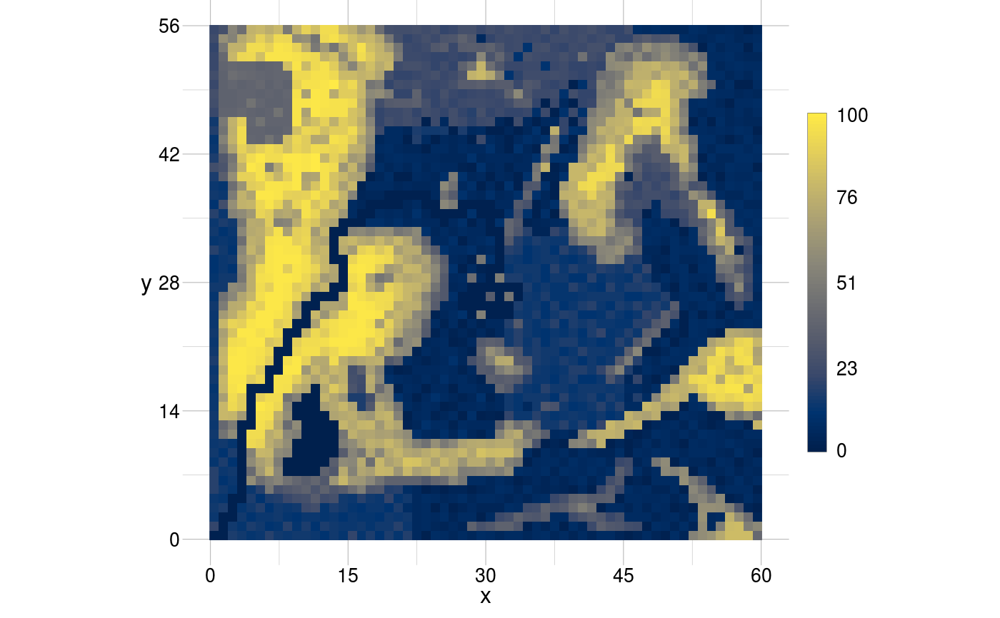

Assign parameters in a gtTheme to create a new theme.
setTheme(
from = NULL,
title = NULL,
box = NULL,
xAxis = NULL,
yAxis = NULL,
grid = NULL,
legend = NULL,
scale = NULL,
parameters = NULL
)
Arguments
| from |
[gtTheme]
an gtTheme object. |
| title |
[named list(.)]
plot = TRUE/FALSE,
fontsize and colour of the title. |
| box |
[named list(.)]
plot = TRUE/FALSE,
linewidth, linetype and linecol of the bounding box
(not supported recently). |
| xAxis |
[named list(.)]
plot = TRUE/FALSE, number of
bins and margin of the x-axis,
label [named
list(.)]
plot = TRUE/FALSE, title, fontsize,
colour and rotation of the x-axis label,
ticks
[named list(.)]
plot = TRUE/FALSE, fontsize,
colour and number of digits to which to round the x-axis
ticks. |
| yAxis |
[named list(.)]
plot = TRUE/FALSE, number of
bins and margin of the y-axis,
label [named
list(.)]
plot = TRUE/FALSE, title, fontsize,
colour and rotation of the y-axis label,
ticks
[named list(.)]
plot = TRUE/FALSE, fontsize,
colour and number of digits to which to round the y-axis
ticks. |
| grid |
[named list(.)]
plot = TRUE/FALSE,
colour, linetype and linewidth of the major and minor
grid and whether or not to plot the minor = TRUE/FALSE grid. |
| legend |
[named list(.)]
plot = TRUE/FALSE, number of
bins, ascending = TRUE/FALSE order of values and the
sizeRatio of plot and legend,
label [named list(.)]
plot = TRUE/FALSE, fontsize and colour of the legend
labels,
box [named list(.)]
plot = TRUE/FALSE,
linetype, linewidth and colour of the legend box. |
| scale |
[named list(.)]
param = 'someParameter' and
to = 'someAttribute' to which to scale 'someParameter' to. Whether
or not to use the values' identity, the value range that
shall be represented by the scale and the number of bins. |
| parameters |
[named list(.)]
linecol, fillcol,
missingcol, linetype, linewidth, pointsize and
pointsymbol of the plot object. |
Examples
#> ✖ title
#> ✔ box in grey with 0.6 wide lines of type solid
#> ✔ xAxis with 4 bins and a margin of 5%
#> ✔ - label x in black with fontsize 12
#> ✔ - ticks in black with fontsize 10 rounded to 1 digit
#> ✔ yAxis with 4 bins and a margin of 5%
#> ✔ - label y in black with fontsize 12
#> ✔ - ticks in black with fontsize 10 rounded to 1 digit
#> ✔ grid in grey with 0.6 wide lines of type solid
#> ✔ legend with values ordered ascending in 4 bins and a relative height of 0.6
#> ✔ - label in black with fontsize 10
#> ✔ - box in black with 0.2 wide lines of type solid
#> ✔ objects with line-colour black and fill-colour empty
#> with 1 wide lines of type solid
#> or 0.5 wide points of type 20
